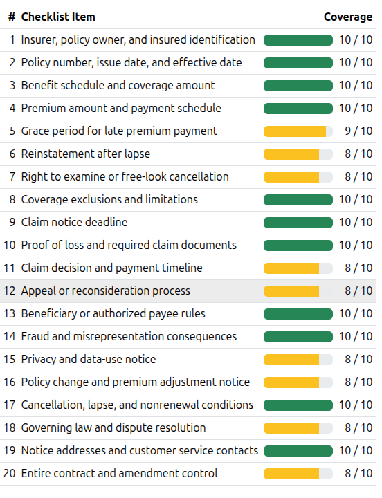
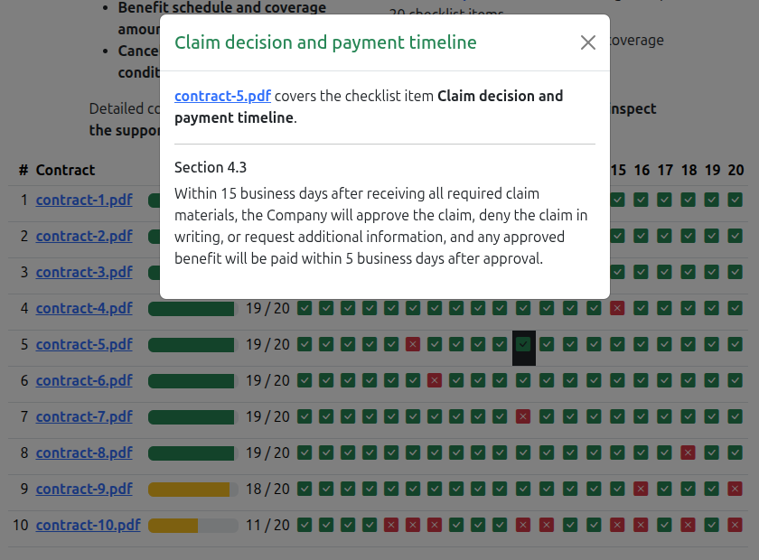
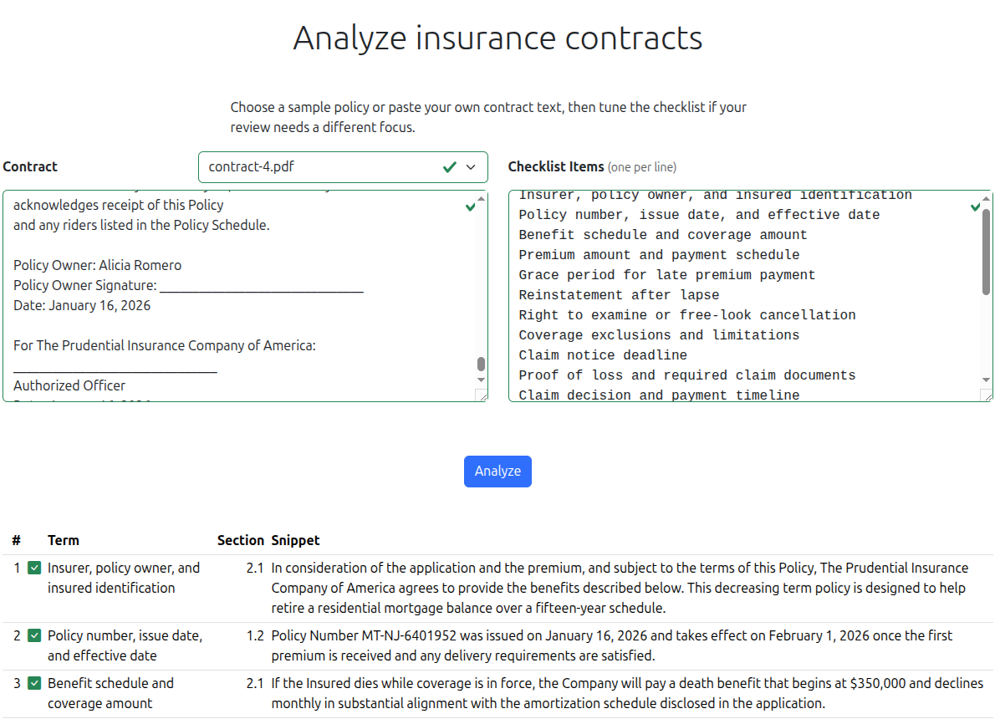
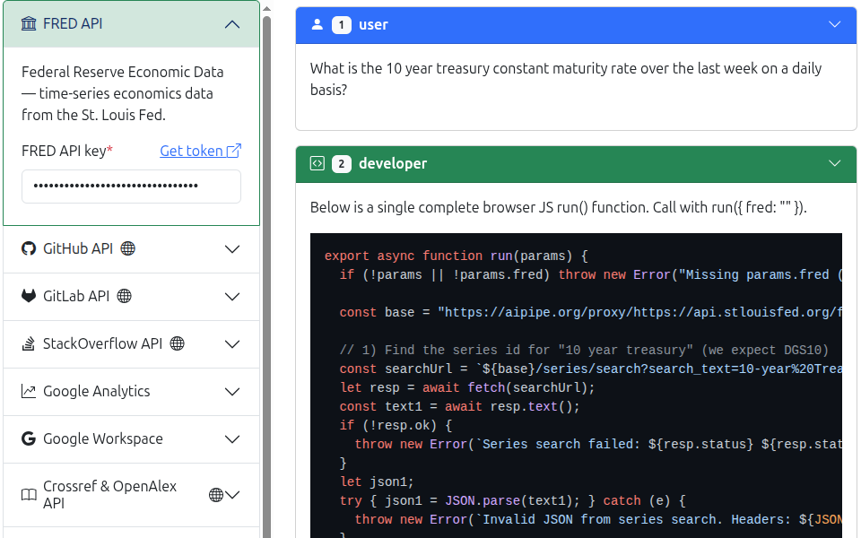
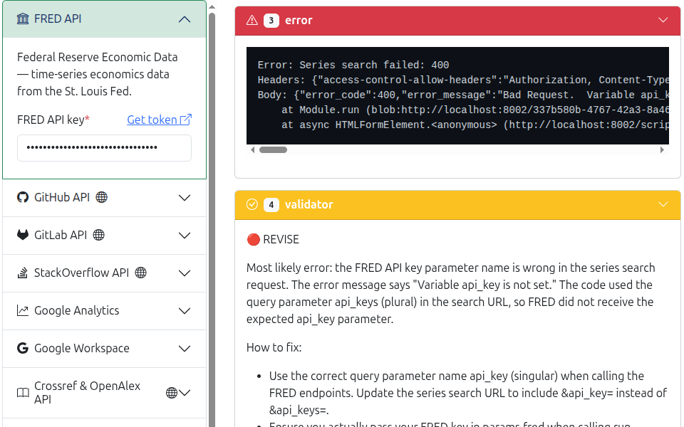
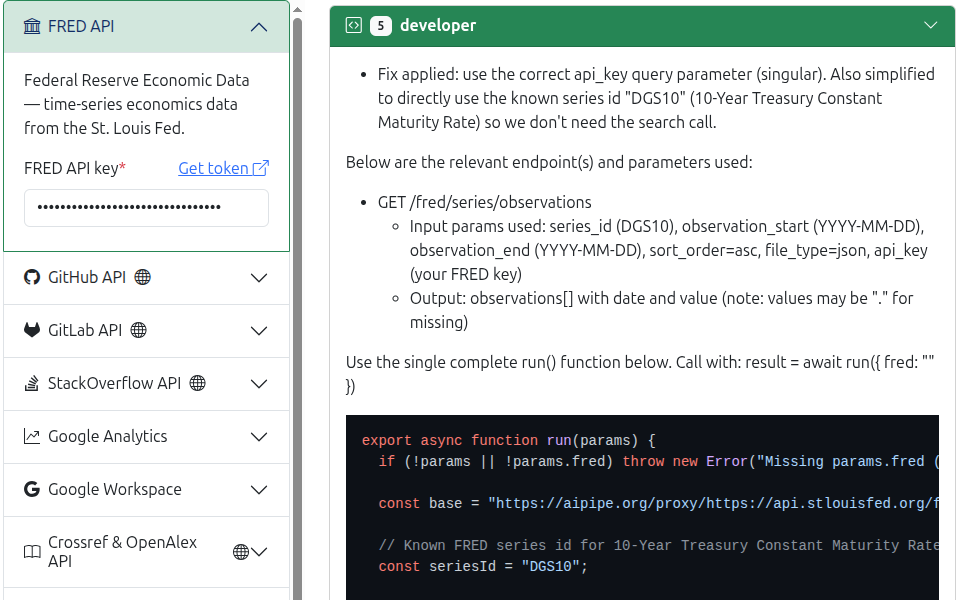
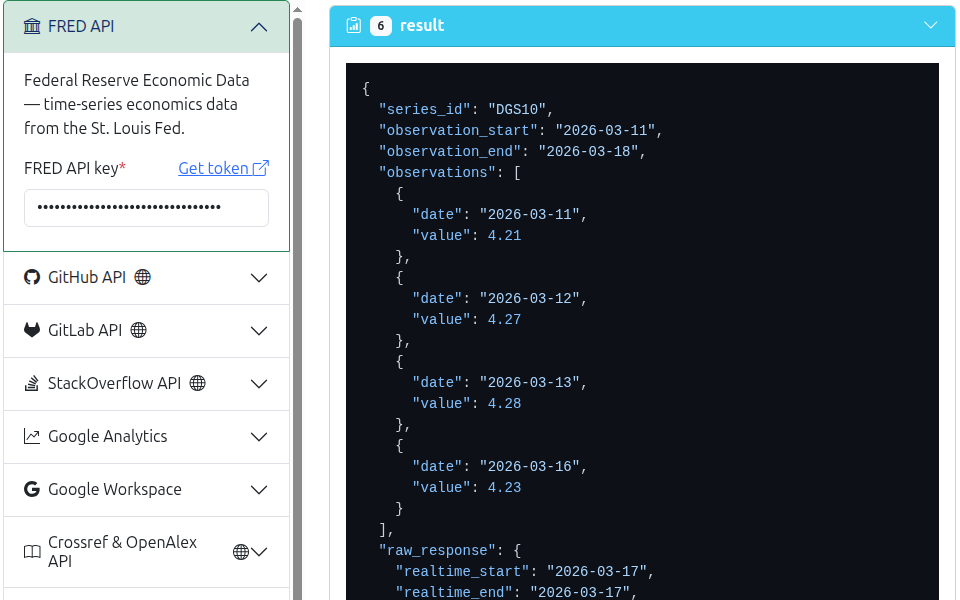
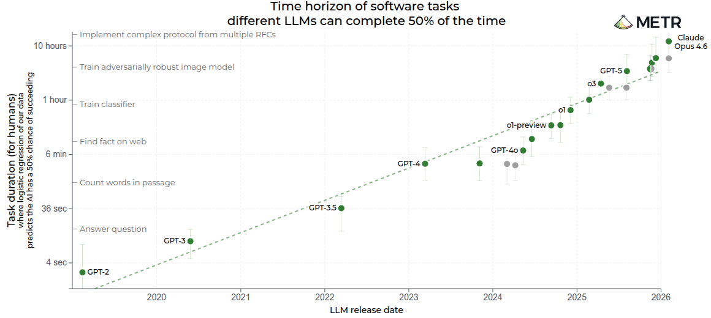

There is a McDonald's somewhere in America — or rather, there was — where an AI took drive-through orders. Customers would roll up, speak to a machine, and the machine would try its best. It often got things wrong. Not occasionally wrong. Not edge-case wrong. Wrong in ways that required a human being in Manila to watch the feed and intervene, over and over again. The company that built that system, Presto, disclosed in its own regulatory filing that 70% of AI-processed drive-through orders needed human intervention before being placed. McDonald's eventually pulled the plug.
Ankor Rai tells this story not to mock the AI, or the company, or even the ambition. He tells it because it is, he says, the story of almost every AI deployment in the enterprise today — just told faster, louder, and in front of a lot more customers.
"We are at the cusp of what we would call really an agentic AI explosion. Without a robust verification architecture, these investments will fail — like McDonald's, which had to deploy the AI and then withdraw it."
— Ankor Rai, CEO, Straive
The Probabilistic Machine
Ankor Rai has spent the better part of 25 years watching enterprises deploy technology — first data, then machine learning, now AI agents. He is not a pessimist about any of it. But on a Wednesday morning in March 2026, speaking to a room of insurance and asset management professionals in London, he laid out a problem so fundamental that it reframes every breathless announcement you've read about autonomous AI.
The problem is this: software, throughout all of computing history, has been deterministic. You write a function. You give it an input. It produces an output. Every single time. If you test the function once and it passes, you can ship it and be confident it will keep passing for that same input forever.
LLMs are not deterministic. They are probabilistic. They can produce a different output for the exact same input on two consecutive runs. The function metaphor breaks down. The entire edifice of software quality assurance — CI/CD pipelines, regression testing, edge case libraries — was built for a world that no longer exists the moment you put a language model in the loop.
"The core issue is not a fault with the data pipeline. It wasn't negligence. The underlying AIs are probabilistic — which means unless every single output has a verification architecture, you run the risk of delivering an output that is not valid."
— Ankor Rai
To make this concrete, Ankor walks through what happens when this truth is ignored. The examples come from the public domain, chosen because they are famous enough that everyone in the room has heard of them — and infamous enough that nobody wants to be the next one.
The last two numbers deserve a moment. 74% of agents have a human expert looking at every output. And yet only 5% of agents interface with other software directly — the rest terminate in a person. Ankor lets the math sink in before drawing the implication:
"If you assume agentic AI being deployed across a variety of use cases, it is untenable to rely on humans across every use case in this way."
— Ankor Rai
This is not a technology failure. It is a structural one. We have built agents powerful enough to synthesize research, draft contracts, adjudicate claims — and then stationed a human being at the exit to check the work before it goes anywhere. The assembly line produces outputs; humans read every one of them. We've automated the labor but not the trust.
And it could get worse. The global generative AI market is projected to go from $40B today to over $1 trillion by the early 2030s. Ankor calls this the "agentic AI explosion." His point is not triumphalist — it's a warning. If the verification problem is already stressing enterprises at current scale, what happens when the number of deployed agents multiplies by 25?
How Your Peers Are Doing It (And Why It's Not Enough)
Ankor does not offer theory without grounding. Straive works with 350+ clients across 30 markets, which means that when he describes what "enterprises are actually doing today," he is drawing on a very large dataset. What he describes is a picture of sophisticated organizations doing sophisticated work — and still, somehow, arriving at the same structural answer: get a human to check it.
Morgan Stanley's AI assistant doesn't roam the internet. It is explicitly pointed at a curated library of roughly 100,000 internal research documents. JPMorgan's AML and fraud detection agents cross-validate against internal research and hand off to human investigators. BlackRock and UBS run multi-model validation with deep stress testing — and then a human expert.
What's striking is not the sophistication of the individual approaches. It's that every single one of them ends with a human. The agents have been given the most powerful tool in the history of language processing, and the organizations deploying them have essentially said: yes, but also, someone needs to check the homework.
"Out of all deployed AI, 95% have an end user who is a human. Only 5% of agents today — their output directly enters another agent or another system."
— Ankor Rai
This is not because the engineers are timid. It is because the engineers are correct. The verification problem is real. The non-determinism is real. And the gap between what an AI can do in a demo and what you can bet your enterprise on in production is, right now, enormous.
The Five Strategies
Ankor describes two broad classes of response. The first is to constrain the agent — essentially to build so many guardrails around it that its autonomy becomes notional. The second is to validate the output — to run every result through one or more additional layers of checking before it goes anywhere.
Eighty percent of deployed agents today use static workflows — meaning the agent doesn't decide where to get its data; a human engineer already decided that, encoded it, and locked it down. Over two-thirds of agents are restricted to fewer than ten autonomous steps. The point of all this confinement is to limit the blast radius if something goes wrong.
Then, on the output side, there's a layered defense:
- LLM-as-judge: A second model is trained on a "golden dataset" and evaluates whether the production agent's output meets expectations. Used by over 51% of deployments.
- Cross-referencing: The AI's output is compared against existing verified data sources to catch fabrications. If the sales intelligence agent says a client meeting happened in 2019, the CRM data can confirm or deny it.
- Rule-based checks: Simple programmatic checks outside the LLM loop — "Does the approved claim amount fall within coverage limits?" — applied as a final sanity filter.
- Simulation and testing: Running the agent against synthetic scenarios to probe failure modes before production.
- Human validation: The backstop. 74% of the time, someone reads the output.

⚠ The CI/CD Problem
Today's software quality process — write code, run tests, if tests pass deploy — fundamentally breaks with LLMs. You can't write a comprehensive test suite for a system with unbounded inputs and non-deterministic outputs. The output that passed in testing may fail in production for the same input.
"This sort of process doesn't work for agentic AI. Why? Because the outputs are non-deterministic. For software, once I check the pipeline, if it produces a result for a certain test case at one time, I know for a fact it will deterministically produce the same output 100 times over. That is not the case for agentic AI."
— Ankor Rai
Making It Real: Anand's Demos
At this point, Ankor hands over to Anand Subramanian — the person Ankor calls "the head of our R&D and the one who does the coolest work in the company." Anand is more measured in his own description: he calls himself an LLM psychologist. His job is to understand how these models behave, where they fail, and how to build systems around them that are actually trustworthy.
What follows is forty-five minutes of live demos — not slides, not theoretical frameworks, but real systems, running in real time, showing what verification actually looks like when the rubber meets the road.
Demo 1: Sales Intelligence — Grounding as Verification
The first demo is a sales intelligence tool deployed at PGIM, the asset management arm of Prudential Financial. The anonymised version Anand shows is built around a fictional scenario: a relationship manager at Apollo Global Management trying to understand how to grow their relationship with Abu Dhabi Investment Authority.
What the tool produces is a multi-layer brief. At the top level, a strategic summary: wallet share is 0.4%, there's massive headroom, and you need a CEO-level meeting — the last one was in 2019. Beneath that, a set of ranked signals, each with a confidence score and a citation. Beneath that, inferences built from multiple signals, each inference showing its evidence chain. And beneath that, a list of known unknowns — things the system explicitly doesn't know.
The key verification mechanism here is not a separate judge model or a human reviewer. It is grounding — every claim the AI makes can be traced back to a source. The sheikh has been confirmed as MD? That came from document 52, with high confidence. The five-year expected returns of 12–15%? Medium confidence; sourced from the annual review. Low-confidence claims don't make it into the final brief.
"If we want something that's verifiable: show the original source, show the grounding. Ask for a level of confidence — which it tends to do a reasonable job of — and show it clearly enough to a human so that they can say, 'Yeah, this makes sense,' or 'I can just click here and go check.'"
— Anand S, LLM Psychologist, Straive
This is a profound reframing of the problem. The question is not "Is the AI always right?" (it isn't). The question is "Can a human quickly determine whether the AI is right?" If the answer is yes — if the citations are surfaced, the confidence scores are visible, and the unknowns are explicit — then the system is verifiable even if it is not always correct.
Demo 2: Contract Analysis — LLM as Judge
The second demo shifts the question slightly. The first demo asked: can an AI generate something verifiable? This one asks: can an AI verify something a human already produced?
Anand loads a batch of ten synthetic insurance contracts — the kind of supplemental accident and life certificates that fill filing cabinets in every large insurer. Against those ten contracts, he runs a checklist of twenty items: Does the contract name the insurer, policy owner, and insured? Does it specify the benefit schedule? Is there a reinstatement-after-lapse clause? Does it include an appeals process?
The output is a matrix. Contract 7 has a policy number: here's the citation, section 1.2. Contract 3 has no appeals process: the AI found none, so the cell is red. Total cost of one contract validation: 3 cents and 6 seconds.

The 20-item checklist — gaps are flagged across all 10 contracts

The matrix — click any cell to see the citation from the contract

Single-contract analysis — 3¢, 6 seconds, with exact clause citations
"Fact-checking becomes easier for human as well as for agent — and that allows us to identify with some confidence that there's a gap. Could this be wrong? Yes, potentially. But it increases human verifiability in two ways: one, by accelerating with a great degree of confidence where it's found stuff; and two, by providing a list of what's missing — which reduces what the human has to check."
— Anand S
The insight here is subtle but important. The AI is not replacing the compliance reviewer. It is making the compliance reviewer dramatically faster. A reviewer who would otherwise read a 40-page contract to confirm 20 checkboxes can now spend their time on the flagged gaps — the red cells — rather than the confirmed-green ones. The human's effort is re-targeted, not eliminated.
Demo 3: Cross-Referencing — Double-Checking Hallucinations
This is where Anand gets mathematical — and funny. The premise: a customer support AI that classifies incoming queries into routing categories. "When will I receive my order?" should go to the "delivery period" queue. GPT 4.1 mini, running that classification, sometimes sends it to "track order" instead. Not always. But enough.
Average error rate across models: 14%. One in seven queries, misclassified.
But here's the trick: no two models fail in the same way. Run two models independently, and only pass a classification forward if both agree. Their errors are largely uncorrelated — a correlation of about 0.2. So the joint error rate drops to 3.7%. Triple-check with a third model, and it falls to 0.7%.
The Accuracy Trade-off
But the manual queue for human review grows: 0% → 12.6% → 28% of volume as models disagree more often.
"Imagine somebody comes to you and says, 'I'll give you 99.3% accuracy and save you only 72% of your effort.' So you've got to put in three people instead of ten at 99.3% accuracy. In some processes, you'd grab it."
— Anand S
The live double-checking results are published at sanand0.github.io/llmevals/double-checking. The improvement is visible:

Accuracy improvement from double-checking · Click to explore the interactive analysis
The limitation Anand is honest about: cross-referencing gets you very high accuracy, but it still doesn't get you to programmatic certainty. There's a difference between "99.3% likely correct" and "I can prove this is correct." For insurance claims, financial trades, medical decisions — you often need the latter. Which brings us to the most technically ambitious demo of the session.
Demo 4: Claims Adjudication — When Code Replaces Confidence
Anand's most striking demonstration is also the one that requires the most context to appreciate. It begins with a question: what if, instead of asking an LLM whether a claim should be approved, you instead asked the LLM to write the rules — and then ran those rules as a program?
The research comes from Cambridge, which developed a Prolog-based domain-specific language called InsurLE for representing insurance contracts as executable logic. An LLM reads an insurance contract and converts it into InsurLE rules. Those rules are then a program — not a probabilistic prediction, but a deterministic proof.
"This is not LLM generated. This is a program running a check, and cannot go wrong. More importantly, it is able to tell us the why a claim is rejected."
— Anand S
Here's the contract: AutoGuard Vehicle Insurance, Policy AG-VH-2024-001. It covers personal passenger vehicles within the continental US, requires the driver to be 21+, and excludes any claim where BAC exceeds 0.08 g/dL at the time of the incident.
The LLM converts that contract into this InsurLE program:
%% AutoGuard Vehicle Insurance — InsurLE Contract Rules
%% Policy: AG-VH-2024-001 · 4-Level Nested Predicate Hierarchy
valid_claim(C) :-
driver_fully_eligible(C) :-
age_eligible(C) :-
age(C, A), A >= 21,
driving_experience_months(C, E), E >= 12,
age_class_verified(C, A, E) :-
A >= 25, E >= 24. %% Standard driver
age_class_verified(C, A, E) :-
A >= 21, A < 25, E >= 12,
novice_endorsement(C, true). %% Young driver
license_compliant(C) :-
license_valid(C, true),
license_expired(C, false),
license_jurisdiction(C, Jur),
recognized_jurisdiction(Jur).
driving_history_acceptable(C) :-
dui_history(C, N),
fault_accidents_36mo(C, F),
history_within_limits(C, N, F) :-
history_within_limits(_, 0, F) :- F =< 2.
history_within_limits(C, N, _) :-
N > 0,
months_since_last_dui(C, M), M >= 60,
high_risk_surcharge_paid(C, true),
defensive_course_completed(C, true).
incident_circumstances_covered(C) :-
sobriety_confirmed(C) :-
bac_within_limit(C) :-
bac(C, B), B =< 0.08. %% DUI exclusion
narcotics_absent(C) :-
under_influence_narcotics(C, false).
geographic_scope_met(C) :-
incident_location(C, Loc),
location_covered(C, Loc).
claim_procedure_followed(C) :-
reported_in_time(C) :-
days_since_incident(C, D), D =< 30.
evidence_complete(C) :-
police_report(C, true).
fraud_cleared(C) :-
fraud_indicator(C, false).
Now enter Marcia Delgado. Her claim: a single-vehicle accident on Highway 101, vehicle drifted off the road and struck a guardrail at 65 mph. The responding officers administered a breathalyzer. BAC: 0.14% — nearly double the legal limit of 0.08%.
Her claim form: Claim auto_2 — Marcia Delgado, $12,000
The InsurLE engine converts her claim into a set of facts:
age(claim_auto_2, 28).
driving_experience_months(claim_auto_2, 84).
license_valid(claim_auto_2, true).
license_expired(claim_auto_2, false).
dui_history(claim_auto_2, 0).
vehicle_ownership(claim_auto_2, own).
vehicle_class(claim_auto_2, passenger).
vehicle_weight_kg(claim_auto_2, 1420).
bac(claim_auto_2, 0.14).
incident_location(claim_auto_2, continental_us).
days_since_incident(claim_auto_2, 2).
police_report(claim_auto_2, true).
The program runs. Most checks pass. Then it hits the sobriety clause. The proof tree fails — and not vaguely. It fails with an exact branch:
✗ valid_claim(claim_auto_2) — DENIED
✓ Driver Fully Eligible
✓ Vehicle Authorization Valid
✗ Incident Circumstances Covered
✗ Sobriety Verification
✗ Sobriety Checks
✗ BAC ≤ 0.08 g/dL · 0.14 > 0.08 — DUI VIOLATION ✗
✓ Claim Procedure Followed
This is the difference between probabilistic and programmatic. The answer is not "I think this claim is likely invalid (confidence: 94%)." The answer is: Marcia Delgado's claim fails because BAC 0.14 > 0.08, violating Section 3 (Sobriety & Intoxication Exclusion). End of proof.
The LLM's role is front-loaded — converting the contract into rules. That conversion can go wrong, and Anand is honest about this. But it's a one-time check. A compliance expert reviews the generated rules against the original contract once. After that, every subsequent claim adjudication is a pure program — auditable, reproducible, and explainable.
Demo 5: The Coding Agent — When Code Is the Verifier
The final demo is a pivot from the determinism of logic programs to the self-correcting dynamism of coding agents. Anand loads an API agent and points it at FRED — the Federal Reserve Economic Data service — with a simple question: what is the 10-year treasury constant maturity rate over the last week?
He deliberately picks a cheap model to illustrate a point. The agent thinks, writes code, calls the FRED API — and fails. Wrong parameter name. The API returns an error.
"The error message comes in handy, because it has the ability to think about the error and revise the code. The reason is probably because the API key parameter name, which it guessed, is wrong — and the error message says the API key is not set."
— Anand S

Step 1 — Agent writes code to query FRED API

Step 2 — API call fails; error message returned

Step 3 — Agent reads error, rewrites code, retries

Step 4 — Validator confirms success: 4.21%, 4.27%, 4.28%…
"Writing code fails in very different ways. It either works or it doesn't work. It's not hallucinating in the traditional sense — and that's the kind of reliability we want. The self-correction means we have the ability to constantly iterate and go forward."
— Anand S
The agent reads the error, understands it, rewrites the code with the correct parameter name, and calls again. The data comes back: 4.21 on the 11th, 4.27, 4.28. A built-in validator confirms success. The whole loop took about a minute.
This is a fundamentally different kind of reliability. When an LLM generates natural language, it can confidently assert something false. When it generates code, the code either runs or it doesn't. Errors are deterministic and legible. The agent's self-correction loop is a verification mechanism built into the generation process itself.
The METR Horizon: How Long Can Agents Work Alone?
Anand pulls up a chart that stops the room. It comes from METR — the Model Evaluation and Threat Research organization — which measures how long AI agents can work independently on complex tasks without human intervention.

METR Horizon Chart — time agents can work independently, doubling every ~7 months · Click to read the full report
"As of 2026, agents can work — something like Claude Opus 4.6 can work for 12 hours continuously. We just saw something work for what, a minute? Well, take the whole thing. Because this trend is going almost exponentially — this is a logarithmic scale, so it's just growing exponentially — in a few months we should be seeing agents work for days, weeks."
— Anand S
The METR chart shows agent autonomy horizon doubling roughly every seven months. In 2023, agents could reliably complete tasks requiring about 2 minutes of focused human work. By early 2026, that figure has reached roughly 60 minutes for the best models. Extrapolate the trend: by 2027, agents that can work for a full working day without intervention. The implications for verification — and for the entire framework Ankor laid out — are seismic.
The Future: Five Vectors to Verifiable Autonomy
Ankor returns to close the session with what he calls "five interconnected vectors" for how the field moves from its current state — constrained, human-dependent, probabilistic — to something genuinely trustworthy at scale.
The first vector is the most fundamental: moving beyond "testing correctness" to standard CI/CD testing. Right now, verification happens at the output level — every result checked individually. The goal is to verify the pipeline once and trust the results. To get there, the field needs a rigorous taxonomy of agent failure modes. What specific inputs cause which models to hallucinate? What are the boundary conditions? Right now, teams treat non-determinism as ambient background noise. The future requires treating it as an engineering problem with measurable failure modes.
The second: better understanding of how and when agents fail. "We treat it as, 'Oh, it's probabilistic,'" Ankor says. "That's basically like an assembly line which produces 5% defects and we're like, 'We'll figure out, we'll look at the defective pieces.' That works for an assembly line. It definitely doesn't work for software being put into production." The frontier model labs are already shifting from benchmarking capabilities to benchmarking failure modes. This is the work that unlocks everything else.
The third: production and verification integrated into the same agent subtask. Today's architecture separates the production agent from the verification layer. Future agents will self-verify continuously — running their own tests as they work, flagging uncertainty before it reaches the output, correcting mid-stream. The coding agent demo foreshadows this: the self-correction loop is a primitive form of integrated verification.
The fourth: agents becoming software-facing rather than human-facing. Today, 95% of agent outputs go to a human. As verification matures, agents will increasingly output directly to other systems — APIs, databases, downstream agents. The 5% becomes 50%, then 95%. This is the transition from "AI that helps people" to "AI that runs processes."
The fifth: verification as a standard layer in the enterprise AI stack — not bolted on, not a team's afterthought, but a formal organizational function with its own budget, its own tooling, and its own people. Ankor draws the parallel to the post-2008 financial crisis:
"After the Global Financial Crisis, the OCC basically said every quantitative model and every tool that is deployed needs to be validated and monitored. Very quickly we're going to have to institute similar processes to what we had for model validation. Before any model goes into production, it needs a separate validation layer. Just as the second line of defense — where the developer is different from the validator — there needs to be a separate team validating LLM models."
— Ankor Rai